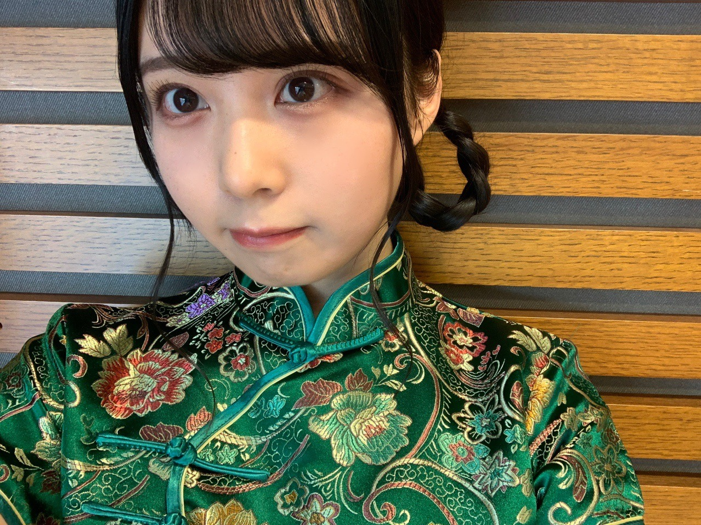

2020/1219Satあったかいお布団が。佐藤璃果
こんにちは~
佐藤璃果です。

巻き巻きしてもらいました！(*¨*)
東京の横断歩道って長いなぁと思い
それってああそうか
交通量が多くて、車線が多いからか！
こんなに身近な所にも
都会要素が沢山含まれてるんだなぁと。
歩くことが多いです、
車道の向こう側に広がる
夕方の都会の景色も好きです。
ジャンプしてピースしたくなるの。
冬です寒いです。
お布団から出れなくなる季節ですか？

ノギザカスキッツオフショットです
照負倶楽部ありがとうございました。
やはり先輩方はお強いですね...
ゆなちゃんもギリギリまで沢山考えて
いて、私はもうキュンキュンでしたよ。
もっと成長していけるように頑張らせて
いただきます！！
❁
○12月21日発売、B.L.T. 2月号さん。
4期生連載企画に登場させていただきます。
セブンネットショッピングさんで注文すると
ポストカードが付くようです！
ぜひチェックをお願いします。
発売されたらまたお話させて下さい。
❁
アンダーライブ
私も沢山盛り上がりたいと思います。
無事に沢山の方が楽しんで、幸せな気持ちや温かい気持ちに溢れて終えられる事を願っています。
先輩方の素敵なところ、沢山見させていただきます！！︎︎☺︎︎︎
❁
テスト期間が終わり、
もうすぐ皆さん冬休みですか？
今年はどんな毎日を
過ごされるのですかね~？

にっこ

笑う写真を撮ろうとするとね
ブレてしまうのが難点なんですよ( ˙º˙ )
~~~質問~~~
○ 来年は璃果ちゃんにとってどんな1年にしていきたい？
普通を大事に、周りを大事に、日々を大事に
成長したいです。
○
すごく直近で、
去年の友達としたクリスマスパーティー。
プレゼント交換とかてすね。懐かしい...
○ 寒くなってきたので鍋を食べる機会もあると思うんですけど、鍋によく入れる具材は何ですか？
○ 璃果ちゃんおすすめのハンドクリームはありますか？？
♡ローラメルシエのハンドクリーム
♡ジルスチュアートのハンドクリーム
○ 璃果ちゃんの好きなお寿司のネタは？
♡いくら、
♡サーモン、
♡光り物、
...
❤︎ 枝豆
○ 始めてみたいことってある？
楽しい運動
~~~~~~~~~~~~~~~~~~~
明日はるなぴです。
私の名前が出てきて嬉しかっだなぁ
~~~~~~~~~~~~~~~~~~
皆さんにとって
素敵な1日になりますように。

本日は櫻坂46の幸阪茉里乃ちゃんの
お誕生日です！！
おめでとうございます(っ ॑꒳ ॑c)
まりのんとご飯に行ったこと、
とても懐かしいです。可愛いのです！
可愛い！坂道研修生ツアーでは名前順で隣で、沢山の思い出を隣で過ごしました！
楽しそうでなによりです。
またご飯に行けたらいいなと思います。
素敵な一年になりますように！
またね。
#48りか
コメント(272)
この頃はお風呂に入る前に部屋に暖房を
入れてます
寒くてなかなか寝付けないからね
俺はなかなか寝付けないから
いろいろ工夫してます (-.-)y-., o O
璃果ちゃんは寝付きはいい方ですか？
明日はディーラーに車見に行ってきます
2回目ですが新車の購入を考えています！
今の車でよく京都や大阪や横浜へ
握手会行きましたよ
握手会行ってレーンに並んでいて
知り合った仲間も凄く出来たし増えました
握手会懐かしいしまた出来るといいな
璃果ちゃんとミーグリでいっぱい
お喋りして認知もらって握手会で
逢えるといいなと毎日思っています
璃果スマイルで見つめられた瞬間に
心臓がドキドキして何も話せれなくなるかな
ε=ε=ε=ε=ε=ε=┌(;￣◇￣)┘
まずはミーグリが早くこないかなと
思っていますしモバメが始まらないかなと
今日はここまで
またラブコメするけんね
おやすみなさい 璃果ちゃん
「照負倶楽部」豪華で可愛いチャイナドレス姿を拝ませてもらいました。藤森さん相手に3期生のアプローチの仕方は堂に入ったもの。りかちゃん達の発展も楽しみなスキットです♪
『B.L.T.』追ってチェックします。
連日の冷え込みが増し暖かな場所から離れ難いですが、華やぐ年の瀬を心置きなく過ごしたいものです♪
ぷ～さんです(｡･ω･)ﾉﾞ
巻き巻き璃果ちゃんも可愛い(//∇//)
東京はたしかに長いかも！
スクランブル交差点とかめっちゃ長いよね！！
ジャンプしてピースはなんとなく分かる(笑)けど、さすがに出来ないよね(｡-∀-)
冬だね～今週は特に寒くなったよね～
勝手なイメージだけど、北海道とか東北出身の人は寒さに強いって思うけど、実際は違うんだよね？
スキッツ見たよ～チャイナ璃果ちゃんめちゃくちゃ可愛かったし、俺は速攻キュンキュンだったよ(≧∇≦)
また挑戦して欲しいな～
BLTさんもちろんセブンネットで予約したよ！！
今から楽しみだし、オフショットも発売されたら載せてね～
アンダラ盛り上がってるみたいだね～！！！
いつもと違う形だけど、ホント無事に終わってくれると良いよね(･∀･)
テスト終わったんだね～結果はどうだったのかな～？
笑う写真がブレちゃうかぁ～う～ん？
スマホ置いて撮影したらどうかな？ヾ(･ω･`)
あっ！来年は難しいかもだけど、正月とか璃果ちゃんお参りとか行く？行くならお賽銭とかいくら投げるのかな？
次は24日更新だね～璃果ちゃんサンタお待ちしております(笑)
じゃあまたね！
枝豆は美味しいですが、お寿司ではまだ食べたことがありません。
布団から出られない季節になってきましたね。
ブログ更新ありがとうございます。
確かにもう2020年も終わりますね〜璃果ちゃんはどんな一年でしたか？
自分は受験から高校と環境が変わった一年でした。
自分からすると璃果ちゃんは飛躍した年って感じだと思います(^^)
高校生になった自分は今年からサンタは来ないようです笑
璃果ちゃんには今年来るのかな？
プレゼント交換なんてするんだ！！自分は一回もしたことない。
でもなんか面白そうですね！
ミーグリ
三次も当選したので璃果ちゃんとは結構話せます！
楽しみだな〜何を話そうか、もう迷ってます、
というか璃果ちゃんを目の前にして話せるか心配です笑笑
Question
Ｑ璃果ちゃんにとって今年の漢字を教えて下さい！
↑ちなみ自分は変化の"変"です。
Ｑ最近寒くてベッドから出られないんですけど、璃果ちゃんはすぐに起きれます？笑
Ｑクリスマスは何か買ってもらいますか？もしくは買いますか？
Ｑ最近ハマっていることはありますか？
Ｑ本番への気持ちの持っていき方を教えて下さい。
では今日もお疲れ様でした。
次のブログも楽しみにしています
れんれんです。
巻き巻きしてもらったのね！可愛い！
あ、そうそう！俺も美容院でパーマかけてもらったよ〜！☺︎
なんか犬みたいになった笑
たしかに都会は信号長いよね...
免許取ったから勉強したけど、名古屋とかでは5車線もあるらしいよ！(o_o)
布団から出られないよね...
でも学校やバイトがあるから起きないとね...笑
照負倶楽部めちゃめちゃ面白かったよ！
璃果ちゃん可愛かったなぁ〜！！！！
ただ「好きだよ」だけじゃなくて色んなところ褒めてたの良い事だなって感心したよ☺︎
BLTさん楽しみだね！
アンダーライブも2日間終わって凄い事になってるらしいから明日の千秋楽も頑張って欲しいね☺︎
来週学校行ったら冬休みだよ〜！
2週間ぐらいだけど、冬休みもバイトに追われるかなー笑
クリスマスイブ、クリスマス、大晦日、元旦全部バイト笑
俺の場合笑わなくても自撮りしたらブレちゃうから璃果ちゃんが尊敬ですよ...なんでみんなそんなにブレないで撮れるんだ...
運動出来ない人でも出来る運動か...縄跳びとかトランポリンとか良いんじゃない？？楽しく出来ると思うよ！！
○年末年始に「これは絶対食べる！」って決めてる食べ物ってありますか？？
璃果ちゃんにとって素敵な1日になりますように
またね。
れんれんより
まじで寒い！
今年やばいな！
もうまじで 冬眠してるも！
さんだって成長したいよ～ん
巻き髪りかちゃん可愛すぎる...好きです
アンダーライブは2日目のみ参戦して素晴らしかったです！
やはりライブは身体で感じるものだなぁと思いました
音響の心臓に響く感じ、照明の線、カメラではない生の視線など配信ライブで感じれなかったものを思い出せてライブの良さを再確認できた素晴らしいライブでした!
はやくりかちゃんのライブで踊ってるとこをみたいです！
今年も終わりがけで冬休み入って出かけたいですが安全を考慮して家でゴロゴロしますね。毎年のことだけど...
質問です！よかったら答えてください！
○乃木坂のメンバーで欲しい才能や能力とかありますか？例としては山崎怜奈さんのトークスキルとか、まなったんのあざとさとかです。僕は服に無関心なんで蘭世さんのファッションセンスとかが欲しいです。
○人生で1度は行ってみたい場所ってありますか?
○最近寒いですよね～、 今ヒートテック何枚重ね着してます?か？
○さらば森田さんのいい所3つ教えてください!できるよね!
以上です！ふざけて解答してもらっても構いません!むしろそっちの方が親近感が湧いていいです!返答待ってます!
次のブログも待ってるね！またね!
「た」でした。
新4期生として乃木坂に加入してから璃果ちゃんの優しい笑顔にいつも癒されています☺️
まだまだ璃果ちゃんの知らないことがいっぱいあるのでもっといろいろ知って璃果ちゃんをもっと好きになりたい！
璃果ちゃんはボブにしたことはある？もしくはしてみたいと思う？
でも璃果ちゃんは今の雰囲気がとても好きなのでしばらくは今の璃果ちゃんを見てたいな〜
ノギザカスキッツのチャイナ服の璃果ちゃんめっちゃ可愛かった！僕だったら一瞬出にやけてしまうよ〜
これからもいっぱい活躍する璃果ちゃんが見たいです！応援してます！
りかちゃんの笑ってる顔好きだからもっと笑ってる顔の写真載せて欲しいです‼️
それと左前からだけではなくて色んな角度からの写真も見たいのでお願いします ♂️
寒くなってきたから体調にも気をつけてね
チャイナドレスのりかちゃんめちゃめちゃ良かった〜！
前のレコメンのとか来てた服装も可愛かったし色気めっちゃあるよね！お似合いでした！！
1期生の先輩たちと最近お話した？？
最近本当に寒くなってきたから
風邪ひかないように気をつけてね
ノギザカスキッツのチャイナドレス璃果ちゃん
言葉に表せないくらいかわいすぎたよ〜
もしあの場にいたら
始まる前からニヤニヤして勝負にならないと思う！笑
------------------------------------------------------------
Q 布団から出れない時どーやって出てる？
Q 布団から出るまでに何分くらいかかる？
Q ミーグリで照負倶楽部開催してくれますか？笑
------------------------------------------------------------
最近寒いしコロナも(そろそろ)インフルも
気をつけていつでも元気な璃果ちゃんでいてねଘ(੭ˊ꒳ˋ)੭✧
くーやより
璃果ちゃんはいつも年越し何するの？？
今日はアンダーライブ見に行ったよ！
やっぱ生で見るライブは最高だね！！
またりかちゃんのパフォーマンスを生で見れるといいなぁ！
質問
おせち料理は家で作る？
私は現在千葉県人ですが、以前多摩地域に住んでいた事があって、その頃は車で都心に出かける事も多かったですが、車を運転する方も、車線数が多いのは結構困る事です。あと歩行者側としては、横断歩道が長いと渡り切れなくて、ダッシュする事も困りますね。なので最近は殆ど都内には出かけなくなりました。都心までの電車賃よりネット通販の送料の方が安いですからね。
運動が苦手な人でもできるスポーツって、今はまさにeスポーツですよね。
ではまた。
ノギスキ楽しかったです。藤森さんは照れてくれなかったけど、可愛かった。
髪型もチャイナも似合ってたしね。
ブログ更新ありがとうございます！
照負倶楽部、良きでした…！！
僕を含め、テレビの前のりかちゃんファンはデレデレだったと思うんですけど…。さすがに藤森さんは手強かったですね(笑)
照負倶楽部の続編期待しているので、今度こそは挑戦者を負かしちゃってください！！
質問コーナーの好きな寿司ネタ、生のお魚を食べられない僕には共感ができなくて残念でした…(笑)
逆に質問なのですが、りかちゃんの苦手な食べ物って何かありますか？(一応りかちゃんのブログは全て目を通しているはずですが、既出の質問になっていたらすみません… その際には是非参考リンクを教えていただけたら…)
次回のブログもお待ちしています。
またグラビア撮影のオフショットが見られるのかな…？楽しみです！
ではでは～！
質問
フクダパン知ってる？
食べたことあったら何味すき？
りっちゃん！
ひろき(Yandji)です☺️
最初の写真めちゃめちゃかわいい！！！
りっちゃんのこーいう表情してる時が一番好きやわ☺️
何気にどんな些細なことでも、ちゃんと考えると必ずそーやってしてる意味ってあるよね！
おれも、最近は色んなことが気になるようになって、考えて調べるうちに、色々と知識が増え始めてる気がするわ！！！
最近、めちゃめちゃ寒いよね
朝布団から出たくないもんなぁ、、、、
けど、大学に行くと研究室はあつい、、、
寒暖差にやられるわ
りっちゃんも暖房の入れ過ぎには注意してなー☺️
質問コメントについても書いてみた！
普通を大事に！
周りを大事に！
日々を大事に！
ほんとに全部そうだよね☺️
当たり前のことを当たり前と思わずに、感謝しながら日々を過ごしていこうと心に決めたよ☺️
クリスマスは、バイト先がめちゃめちゃ忙しい、、、
結構疲れるけど、終わった後には、やりきった感がすごいあるんやなぁ☺️
オススメのハンドクリーム！
今度見てみよー！
おれ、乾燥肌やから、ハンドクリームは手放せないんよなぁ
寿司のネタで光ものw
おれは、サーモン☺️
なんか、お寿司食べたくなってきたw
質問返事ありがとー！
よし、今日はもう寝て、明日も大学で研究頑張るぞー☺️
おやすみ！
りっちゃんも体調に気をつけて過ごしてなぁ☺️
では、またねー
ひろき(Yandji)より
ブログ更新ありがとうございます。
１２月生まれは乃木坂メーバーがいなくなっちゃったんですが、そうか幸阪茉里乃ちゃんのお誕生日ですか。坂道としてのつながりがずっと持てるのは新４期生の特権ですね。大切な絆としてこれからも大切にしていってくださいね。
そして、今日は「アンダラ」２日目、聖地・武道館でのライブは感動の連続です。先日の４期生ライブについで私は配信で見ていますが、きれいな画面で、その場にいる雰囲気でサイリウムを振っていました。このご時世の中、さまざまな対策を講じての中での「実現」に関係者の皆様の努力にも頭が下がる思いです。
「B.L.T.」２月号の発売、おめでとうございます。りかちゃんのポストカード付で予約しましたよ。発売日を楽しみにしています。
布団から出たくないのわかりすぎる⸜( •ᴗ• )⸝
シンプルに寒いのもあるけど布団だいすきだから出たくないー！ってなる（笑）
照負倶楽部楽しみすぎてリアタイした！
ほんとにかわいかったし同性のはるかでもデレデレしてしまったよ( ；ᵕ； )
見る目られるだけでぎゅーーーんってなる( ；ᵕ； )（笑）
まりのちゃんのお誕生日で載せてた研究生時代の写真めっちゃ懐かしい（ ; ; ）
大人っぽくなった（ ; ; ）ずっとかわいいけど（ ; ; ）
5日後の更新楽しみにしてるね⸜( •ᴗ• )⸝またね！だいすき！
璃果ちゃんブログ更新ありがとう！
僕は群馬県に住んでいるのですが
コロナの警戒レベルが最高ランクになったのにも関わらず
進学校であるが故に,土曜課外学習(全校参加)をやるという
不満の多い一日でした(笑)
そーいえばなんですけど
璃果ちゃんのタイピングが
乃木坂工事中ではダイジェストになっていて
見れなかったので凄く見たいな〜とw
質問！
○璃果ちゃんの今年のクリスマスの予定は？
○今までの人生で1番の後悔は？
今年は日本海側を中心に雪が多く沢山の事故や被害が連日報道されてますが、りかちゃんのご実家の方は大丈夫ですか？
『質問』
大掃除はもう終わりましたか？
断捨離した事ありますか？
ちょうど、私もね 買ったんだよね～クリームを
手頃な値段で ケースに入っててさ
店員さんに
「クリーム、2つ ください」って お願いして
袋に入れてもらったんだ～
そのあと袋を開けてさ 商品を出してみたら
なんとゆうことでしょう！
甘～い香りが してくるではありませんか！
そして それをパクっと一口食べてみると 中からクリームが、、、。
そうです、璃果ちゃん 正解です
今川焼の話でした、、、、、
おしまい
ブレても かわいい
こんばんは！
巻き巻き可愛いね！
似合ってますよ。
ドキッとしちゃいます。
ミーグリで観れるかな？
ノギザカスキッツは楽しいね。
照負倶楽部すごくキュンキュンしたよ。
とっても可愛かった。
ミーグリで言われてみたいなと思ったよ。
たくさんのスキットで活躍する姿、また視たいな。
今後も楽しみ。
今日はアンダーライブに行ってきたよ。
璃果ちゃんも配信観ていたかな？
先輩方のパフォーマンス、学ぶところがあると思うから、吸収してね。
この間は配信4期生ライブだったけど、今度は直接観れるかもしれないから、本当に楽しみ。
バスラやるのかなぁ。
行きたいなぁ。
寒くなってきたから、暖かくして過ごしましょうね。
健康で行きましょう！
スタープラチナでした。
最近はまたグッと寒くなったね
自分は朝起きたらまず暖房つけて
部屋があったかくなるのをスマホをいじって待ってる。
璃果ちゃんはバッと起きれる？
ノギスキの照負倶楽部の先輩強かったな笑
あれは握手会とかで釣ってーって言われたり色々な経験が大きいと思うから、璃果ちゃんもミーグリとかやってると上手くなるよ^ ^
BLT予約してるでー
楽しみにしてるね！
アンダラ、昨日は現地で見れたよ！
久しぶりにメンバーのパフォーマンスしてる姿を生で見れて嬉しかった！
声は出されへんけど、やっぱりめっちゃ楽しい！
今日は見られへんかったんやけど、
明日は配信で見る！
アンダー曲30曲披露するみたいやね！
楽しみ^ ^
まりっぺも18歳やねー
明日ミーグリで会うから描いてお祝いするねん^ ^
喜んでくれたら嬉しいなぁ。
璃果ちゃんともミーグリであと1ヶ月くらいで会えるかな。
またね
おやすみ
さくらちゃんとあやめちゃんと楓さんと同じ愛知県出身の愛知の覇王です！
蓮加ちゃんと同じ高校2年生、同じ2月生まれです
ノギザカスキッツ見ました！
璃果ちゃん、チャイナドレス、めっちゃ似合っていて、可愛かったです！
璃果ちゃんのセリフ、めっちゃ良くて、にやけてしまいました！
最高です！
これからもずっと応援するので頑張ってください！
瑠果さん、髪型変えたんですね それに、そのリップって以前明るめだと紹介していたものじゃないですか？髪型とよくお似合いです(o^^o)
何かきっと良いことがお有りだったのでしょうか。今回の瑠果さんは、前回より大人の雰囲気があります( ^-^)この場をお借りしてではありますが、瑠果さんの成長ぶりをお目に出来て光栄です(^-^)
話しを変えますが、本当に寒いですよね。はい。布団から出ずらい季節です(°°;)お気持ち分かります(o^-^)
寒さは厳しいですが、お互い頑張りましょう 何かに純粋で、一途な瑠果さんが私は好きです また次回までお待ちしてます おやすみなさい(o^^o)
都会の何がすごいって、広い道路に車や人がビッシリになるのがすごいよね。
ノギザカスキッツ、僕が璃果ちゃんにあんなことされたら瞬殺されるけどな(笑)。
照負倶楽部、悔しがる姿が可愛らしく
ニヤニヤが止まりませんでした
あ、照れさせようとしてる姿も
もちろん可愛いらしかったです笑
今年もあと2週間もないなんて衝撃的です。
やり残したことないかなーって考えると
思ったよりも多くて現実逃避で布団に潜り込む日々です。。
明日が今日より笑顔が多い世界になればいいのに
それが出来る仕事って素敵ですよね
とりあえず目の前にあって出来ることをコツコツと…
そんことを思う午前3時でした笑
ではではヽ(´ー｀)
エアコンをタイマーで朝につくようにしたら起きれるのかなぁ？
それはそれで気持ちよくてもっと寝ちゃいそう。笑
渋谷のスクランブル交差点は本当に大きいね。
僕のいる京都も四条河原町の交差点は大きいけど、スクランブルではないので、普通にまっすぐ５０mぐらい歩くだけだからそんなに大きく感じないんだ。
岩手も栄えてる場所なら大きいイメージだけど。
都会の夕焼けの街並みでジャンプしてピースしてる写真は写真集の１ページになりそうだね！
璃果ちゃんの写真集待ってます！笑
どうせなら海外の交差点も憧れるね。
だとすると行けるのはもうしばらく先かなぁ。
首を長くしてお待ちしております！
アンダーライブも明日で最後かぁ。
アンダー楽曲全披露らしい。
ワクワクするね。
僕は相変わらずお仕事ですけど。笑
気持ちは送ります！
次のブログはクリスマスイブ！
璃果サンタは来るかなあ。笑
素敵なプレゼントも期待しちゃうよ～。
ブログの更新ありがとうございます！
やはり冬は寒くて、お布団から出るのが億劫になりますよね
駄目だと分かっていても休日はベッド上で過ごしてしまうことが多いです…(´･ω･`)
話が変わりますが、なんと先日京都でも初雪が降ったんです！
地元では滅多に雪を見られない為、車や植物に雪が積もっているのを見て、独りで盛り上がってしまいました(^p^)
┈┈┈┈┈┈┈┈┈┈
照負倶楽部お疲れ様でした
私は璃果ちゃんが登場した時点でメロメロでしたよ( ∩ ˙-˙ )⊃・・・ー♡→
チャイナドレスと髪型がよく似合っていて可愛過ぎました(°´˘`°)♡︎ *.
璃果ちゃんらしく褒める作戦で狙っていましたね！
藤森さん、璃果ちゃんから褒められてちょっと嬉しそうに見えました笑
またの出演を楽しみにしています！
┈┈┈┈┈┈┈┈┈┈
B.L.T.は早速セブンネットで予約しましたよ♪
ポストカードのイメージをチラッと見たのですが、EX大衆以来の前髪を分けた璃果ちゃん再びですね( 'o' )!!!
やっぱりデコ出し璃果ちゃんも美しくて大好きです
受け取るのが楽しみです(•̀ᴗ•́)و
┈┈┈┈┈┈┈┈┈┈
サーモンと枝豆は私も好きです…！
回転寿司に訪れた際には必ず注文しています。
ちなみに、1番好きなお寿司のネタは玉子です( ´ᵕ` ).°⑅
実は私も運動が得意でないのですが、卓球やバドミントンは比較的楽しく行うことが出来るように思います^ ^
あとはダンスが楽しいですね！
好きな音楽を掛けながら振り付けを真似て、心の赴くままに身体を動かすので、苦痛の感情が全くありません(∩ ᵕᴗᵕ ∩)･*
┈┈┈┈┈┈┈┈┈┈
昨日のバースデーガール・茉里乃ちゃんとのツーショットとエピソードもありがとうございます( ˙˘˙ )
密かに待っていました( ›ᴗ‹ )b
茉里乃ちゃんとご飯に行けたら、良かったら教えてくださいね！
┈┈┈┈┈┈┈┈┈┈
それではおやすみなさい( ¯ ¯ )ᐝ
璃果ちゃんが良い夢を見られますように✧‧˚
北東北は、たいへんな雪になっています。
日本海側もたいへんだけど、たぶん岩手も同じような感じかな。
地吹雪がすごいんです。
住宅街を抜けると、ほぼ田んぼで、何も遮るものがないから、強風が…………、凄まじい。
火曜日くらいから真冬日が続いているので、雪は溶けないしね。
寿司ネタでは、光りモノなんですね！
良いチョイスです。
コハダとかサバが好きですねー。
あと私は、アカガイとかトリガイとかホッキガイとか。
アワビなんかも好きですねー。
『運動が得意でない人もできる楽しい運動』。
私は、運動が得意ではないけど、ラケットを持ってやるスポーツだけは得意です。
卓球とかバドミントンとかテニスとかね。
たぶん、こういうのだと始めやすいような気がします。
苦手なのは、サッカーとかバスケ。
ひとつのボールを、奪い合う系のスポーツはできないですね。
サッカーは見ている分にはおもしろいんですけどね。
昨日も、柏と川崎の試合を、テレビで見ていました。
まあ、運動をやるにも、寒いとケガをしやすくなってしまうので、予備運動は入念にね！
ノギスキ観たよ〜
すっごく可愛かった！大好きです！
てか愛してるよ！笑
寒いですね〜
今日は早めに布団から出てある程度、支度し終わってからまた布団に戻るっていう謎なことしてます
岩手ではもう雪が積もってるとかいうニュースを見ました
璃果ちゃんのご家族も璃果ちゃんも風邪をひかないように気をつけてくださいね
暖かくして過ごすんだよ〜(お爺ちゃんvoice)
寝ぼけながら書いてるので読みにくいと思いますが失礼します！
今日も元気にいきましょう〜(੭ ᐕ)੭ｻﾑｲ
アンダーライブ2日目行ってきました！
やっぱりライブはいい
配信ライブは有ったけど早く璃果ちゃんのレス頂きたい！
コメントする

PROFILE
新4期生リレー
202104
| SUN | MON | TUE | WED | THU | FRI | SAT |
|---|---|---|---|---|---|---|
| 1 | 2 | 3 | ||||
| 4 | 5 | 6 | 7 | 8 | 9 | 10 |
| 11 | 12 | 13 | 14 | 15 | 16 | 17 |
| 18 | 19 | 20 | 21 | 22 | 23 | 24 |
| 25 | 26 | 27 | 28 | 29 | 30 | |

照負倶楽部みました！私はりかちゃんが入ってきた瞬間ににやけたので秒で負けました！かわいかった、、、好き、、
あと2週間で今年が終わるなんて、本当信じられない！！
りかちゃんにとって今年はどんな一年でしたか？やっと乃木坂の一員になったと思えばコロナでイベントが中止になって、、
大変な一年だったと思うけど、その中でもりかちゃんの頑張ってるところとかすごいところをたくさん見つけられました！まだ直接会えたことはないけど、楽しみが先に伸びたということで！そのころにはもう璃果ちゃんへの愛が飽和状態になってるかも、乃木フェスのクリスマス仕様の写真も可愛くて大好きです、、りかちゃんがどんなに自己嫌悪になっても私はりかちゃんが大好きだし本当に可愛いと思ってるし、努力家で憧れです！！
いつも元気をくれてありがとう
りかちゃんの力になれるように、一生懸命応援しますね
ねぇねぇ、ローラメルシエのハンドクリームって、アンバーバニラですか？